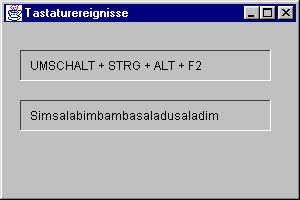

Unter Windows werden alle Tastatureingaben an die fokussierte Komponente
gesendet. Ein Empfänger für Key-Events muss das Interface
KeyListener
implementieren und bekommt Events des Typs KeyEvent
übergeben. KeyEvent
erweitert die Klasse InputEvent,
die ihrerseits aus ComponentEvent
abgeleitet ist, und stellt neben getID
und getSource
eine ganze Reihe von Methoden zur Verfügung, mit denen die Erkennung
und Bearbeitung der Tastencodes vereinfacht wird.
Die Registrierung von Key-Events erfolgt mit der Methode addKeyListener,
die auf allen Objekten des Typs Component
oder daraus abgeleiteten Klassen zur Verfügung steht:
Das Interface KeyListener
definiert drei unterschiedliche Methoden:
public abstract void keyPressed(KeyEvent e)
public abstract void keyReleased(KeyEvent e)
public abstract void keyTyped(KeyEvent e)
|
java.awt.event.KeyListener |
 |
|
Um die Funktionsweise dieser Methoden im Zusammenspiel mit den Methoden
der Klasse KeyEvent
besser verstehen zu können, wollen wir zwischen Zeichentasten
und Funktionstasten unterscheiden.
Zeichentasten sind dabei solche Tasten, mit denen Buchstaben, Ziffern
oder sonstige gültige Unicode-Zeichen eingegeben werden, wie
z.B. [a], [A],
[B], [1],
[2], [%],
[+], aber auch [ESC],
[LEER] oder [TAB].
Zu den Funktionstasten gehören beispielsweise [F1],
[F2], [POS1]
oder [CURSORLINKS], aber auch
die Umschalttasten [STRG], [ALT]
und [UMSCHALT]. |
|
|
|
Die Methode keyTyped
wird immer dann aufgerufen, wenn eine Zeichentaste gedrückt wurde.
Beim Drücken einer Funktionstaste wird sie dagegen nicht aufgerufen.
Im Gegensatz dazu wird keyPressed
bei jedem Tastendruck aufgerufen, unabhängig davon, ob es sich
um eine Zeichentaste oder eine Funktionstaste handelt. Mit keyPressed
können sogar in beschränktem Umfang die Feststelltasten
wie [NUMLOCK] oder [CAPSLOCK]
erkannt werden. Beide Methoden erhalten auch Tastatur-Repeats, werden
also bei längerem Festhalten einer Taste wiederholt aufgerufen.
Die Methode keyReleased
wird aufgerufen, wenn eine gedrückte Taste losgelassen wurde,
unabhängig davon, ob es sich um eine Zeichen- oder Funktionstaste
handelt.
Um beim Auftreten eines Tastatur-Events zu erkennen, welche Taste
gedrückt wurde, stellt die Klasse KeyEvent
die Methoden getKeyCode
und getKeyChar
und zusätzlich die aus InputEvent
geerbten Methoden isShiftDown,
isControlDown,
isMetaDown
und isAltDown
zur Verfügung:
public int getKeyCode()
public char getKeyChar()
public boolean isShiftDown()
public boolean isControlDown()
public boolean isMetaDown()
public boolean isAltDown()
|
java.awt.event.KeyEvent |
getKeyChar
liefert das Zeichen, das der gedrückten Zeichentaste entspricht,
also ein 'a', wenn die Taste [A]
gedrückt wurde, und ein 'A', wenn die Tastenkombination [UMSCHALT]+[A]
gedrückt wurde. getKeyCode
liefert dagegen virtuelle Tastencodes, die in KeyEvent
als symbolische Konstanten definiert wurden. Hier wird beim Drücken
der Taste [A] immer der Code
VK_A
geliefert, unabhängig davon, ob [UMSCHALT]
gedrückt wurde oder nicht. Tabelle 29.4
gibt eine Übersicht der wichtigsten virtuellen Keycodes der Klasse
KeyEvent.
| Symbolischer Name |
Bedeutung |
| VK_0
... VK_9 |
[0]
... [9] |
| VK_A
... VK_Z |
[A]
... [Z] |
| VK_ENTER |
[ENTER]
|
| VK_SPACE |
[LEER]
|
| VK_TAB |
[TAB]
|
| VK_ESCAPE |
[ESC]
|
| VK_BACK_SPACE |
[RÜCK]
|
| VK_F1
... VK_F12 |
Die Funktionstasten [F1]
... [F12] |
| VK_HOME,
VK_END |
[HOME],
[END] |
| VK_INSERT,
VK_DELETE |
[EINFG],
[ENTF] |
| VK_PAGE_UP,
VK_PAGE_DOWN |
[BILDHOCH],
[BILDRUNTER] |
| VK_DOWN,
VK_UP |
[CURSORHOCH],
[CURSORRUNTER] |
| VK_LEFT,
VK_RIGHT |
[CURSORLINKS],
[CURSORRECHTS] |
Tabelle 29.4: Virtuelle Key-Codes
Am einfachsten ist es, innerhalb von keyTyped
mit getKeyChar
die Zeichentasten abzufragen. Dabei liefert getKeyChar
stets den ASCII-Code der gedrückten Zeichentaste, Funktionstasten
werden nicht übertragen. Der Rückgabewert von getKeyCode
ist in diesem Fall immer KeyEvent.VK_UNDEFINED.
Sollen dagegen auch Funktionstasten abgefragt werden, muss die Methode
keyPressed
überlagert werden. Hier ist etwas Vorsicht geboten, denn es wird
auf alle Tastendrücke reagiert und sowohl getKeyCode
als auch getKeyChar
liefern Werte zurück. Die Unterscheidung von Zeichen- und Funktionstasten
kann in diesem Fall mit Hilfe von getKeyChar
vorgenommen werden, deren Rückgabewert die Konstante KeyEvent.CHAR_UNDEFINED
ist, wenn eine Funktionstaste gedrückt wurde.
Die is-Methoden sind bereits
bekannt, mit ihnen können die Umschalttasten abgefragt werden.
Das ist beispielsweise sinnvoll, um bei einer Funktionstaste herauszufinden,
ob sie mit gedrückter Umschalttaste ausgelöst wurde oder
nicht. Allerdings sind die Umschalttasten im Event-Modell des JDK
keine Tottasten, sondern liefern selbst ein Key-Event und lösen
die Methode keyPressed
aus.
Insgesamt ist das Handling von Tastatur-Events nicht ganz trivial
und erfordert ein wenig Aufwand bei der Unterscheidung von Zeichen-,
Funktions-, Umschalt- oder Feststelltasten. Tabelle 29.5
fasst die bisherigen Ausführungen noch einmal zusammen. Die erste
Zeile zeigt das Verhalten beim Aufruf der Listener-Methode
keyTyped
an, die zweite beim Aufruf von keyPressed.
Die erste Spalte liefert dazu den Rückgabewert von getKeyCode,
die zweite den von getKeyChar.
Jedes Element beschreibt in der oberen Hälfte den Rückgabewert
beim Drücken einer Zeichentaste und in der unteren den beim Drücken
einer Funktionstaste.
Tabelle 29.5: Rückgabecodes bei Tastaturereignissen
Das folgende Beispiel demonstriert die Abfrage der Tastaturereignisse.
Es implementiert keyPressed,
um die Funktionstasten [F1]
bis [F3] und den Status der
Umschalttasten abzufragen. Jeder Tastendruck wird in einen String
übersetzt, in msg1 gespeichert
und durch Aufruf von repaint
auf dem Bildschirm angezeigt. Nach dem Loslassen der Taste wird die
Anzeige wieder vom Bildschirm entfernt. Weiterhin wurde keyTyped
überlagert, um die Zeichentasten abzufragen. Jeder Tastendruck
wird in msg2 gespeichert und
ebenfalls auf dem Bildschirm angezeigt. Im Gegensatz zu den Funktionstasten
bleibt die Ausgabe auch erhalten, wenn die Taste losgelassen wird.
Bei jedem weiteren Tastendruck wird sie um ein Zeichen ergänzt.
Zusätzlich werden die einzelnen Ereignisse auf der Konsole dokumentiert.
001 /* Listing2906.java */
002
003 import java.awt.*;
004 import java.awt.event.*;
005
006 public class Listing2906
007 extends Frame
008 implements KeyListener
009 {
010 String msg1 = "";
011 String msg2 = "";
012
013 public static void main(String[] args)
014 {
015 Listing2906 wnd = new Listing2906();
016 }
017
018 public Listing2906()
019 {
020 super("Tastaturereignisse");
021 addKeyListener(this);
022 addWindowListener(new WindowClosingAdapter(true));
023 setBackground(Color.lightGray);
024 setSize(300,200);
025 setLocation(200,100);
026 setVisible(true);
027 }
028
029 public void paint(Graphics g)
030 {
031 if (msg1.length() > 0) {
032 draw3DRect(g,20,50,250,30);
033 g.setColor(Color.black);
034 g.drawString(msg1,30,70);
035 }
036 if (msg2.length() > 0) {
037 draw3DRect(g,20,100,250,30);
038 g.setColor(Color.black);
039 g.drawString(msg2,30,120);
040 }
041 }
042
043 void draw3DRect(Graphics g,int x,int y,int width,int height)
044 {
045 g.setColor(Color.darkGray);
046 g.drawLine(x,y,x,y+height);
047 g.drawLine(x,y,x+width,y);
048 g.setColor(Color.white);
049 g.drawLine(x+width,y+height,x,y+height);
050 g.drawLine(x+width,y+height,x+width,y);
051 }
052
053 public void keyPressed(KeyEvent event)
054 {
055 msg1 = "";
056 System.out.println(
057 "key pressed: " +
058 "key char = " + event.getKeyChar() + " " +
059 "key code = " + event.getKeyCode()
060 );
061 if (event.getKeyChar() == KeyEvent.CHAR_UNDEFINED) {
062 int key = event.getKeyCode();
063 //Funktionstaste abfragen
064 if (key == KeyEvent.VK_F1) {
065 msg1 = "F1";
066 } else if (key == KeyEvent.VK_F2) {
067 msg1 = "F2";
068 } else if (key == KeyEvent.VK_F3) {
069 msg1 = "F3";
070 }
071 //Modifier abfragen
072 if (msg1.length() > 0) {
073 if (event.isAltDown()) {
074 msg1 = "ALT + " + msg1;
075 }
076 if (event.isControlDown()) {
077 msg1 = "STRG + " + msg1;
078 }
079 if (event.isShiftDown()) {
080 msg1 = "UMSCHALT + " + msg1;
081 }
082 }
083 }
084 repaint();
085 }
086
087 public void keyReleased(KeyEvent event)
088 {
089 System.out.println("key released");
090 msg1 = "";
091 repaint();
092 }
093
094 public void keyTyped(KeyEvent event)
095 {
096 char key = event.getKeyChar();
097 System.out.println("key typed: " + key);
098 if (key == KeyEvent.VK_BACK_SPACE) {
099 if (msg2.length() > 0) {
100 msg2 = msg2.substring(0,msg2.length() - 1);
101 }
102 } else if (key >= KeyEvent.VK_SPACE) {
103 if (msg2.length() < 40) {
104 msg2 += event.getKeyChar();
105 }
106 }
107 repaint();
108 }
109 }
|
Listing2906.java |
Listing 29.6: Reaktion auf Tastaturereignisse
Eine beispielhafte Ausgabe des Programms ist:

Abbildung 29.5: Darstellung von Tastaturereignissen